¿Qué es GeoCar?
GeoCar es una solución móvil diseñada específicamente para mitigar las incidencias viales en el municipio Cabimas, Zulia. Permite establecer un canal de comunicación directo y geolocalizado entre conductores que presentan fallas mecánicas en sus vehículos (requiriendo grúa, vulcanización o mecánica ligera) y los talleres de servicio disponibles en la zona.
El sistema opera de forma binaria a través de dos interfaces y roles diferenciados:
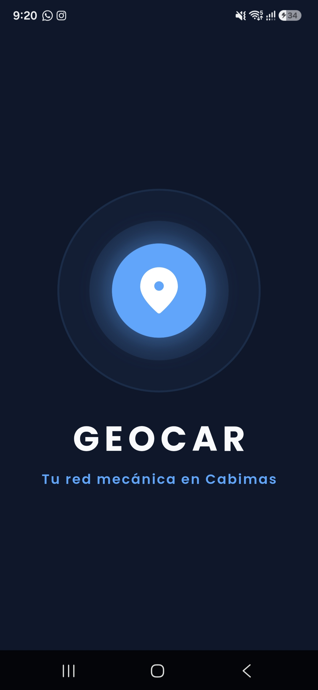
Tu red mecánica en Cabimas
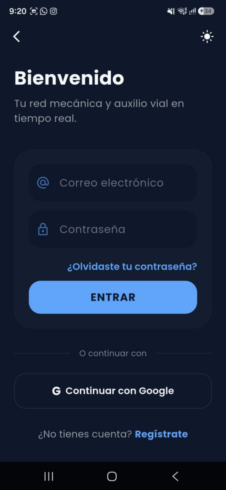
Elige cómo ingresar
¿No tienes cuenta? Crear cuenta
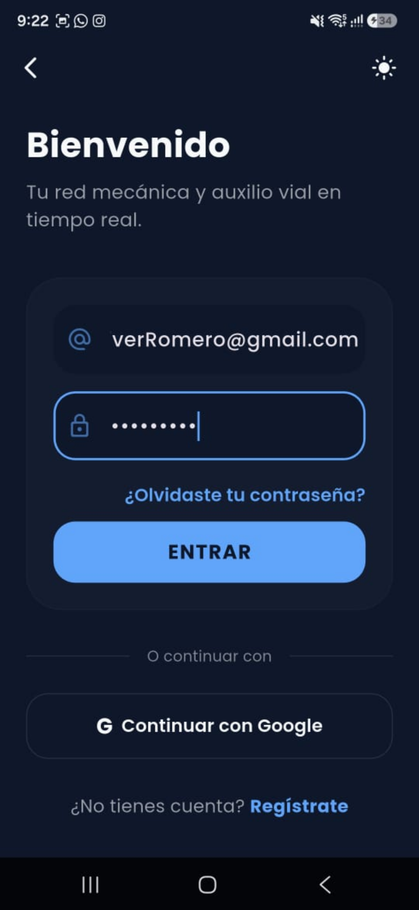
Olvidé mi contraseña
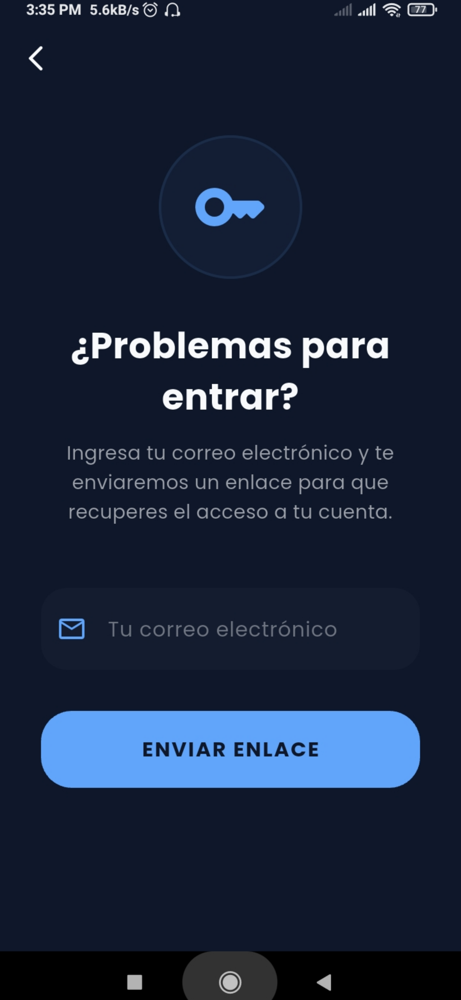
Recuperar Contraseña
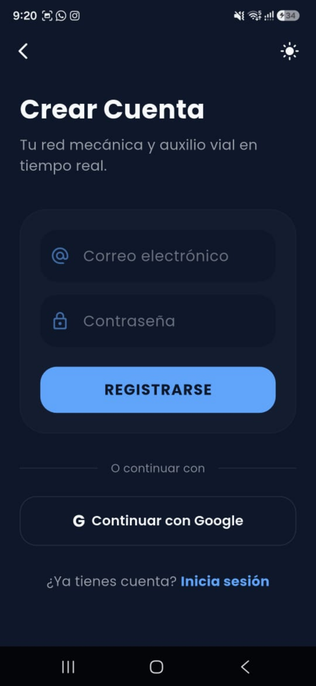
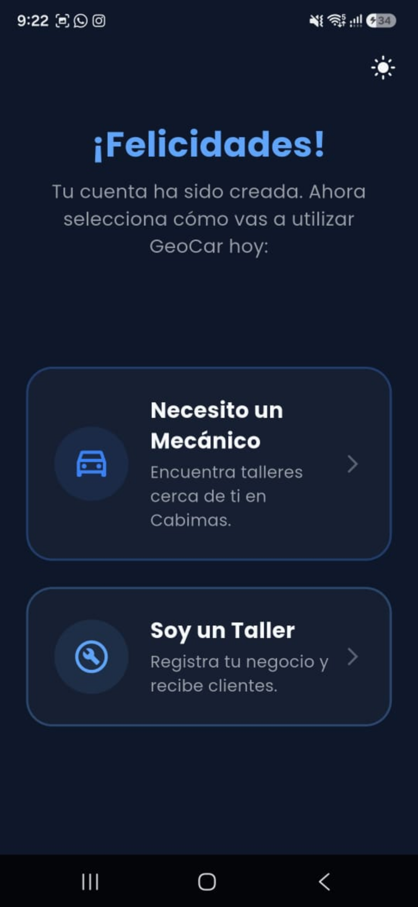
¿Cómo usarás GeoCar?
Encuentra talleres cerca.
Registra tu negocio.
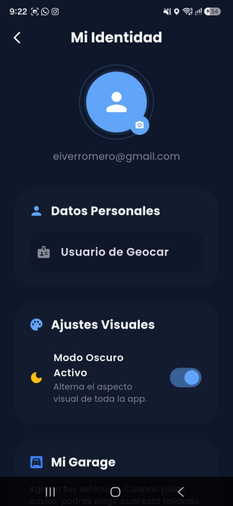
Configuración de Conductor
• Toyota Corolla (2012)
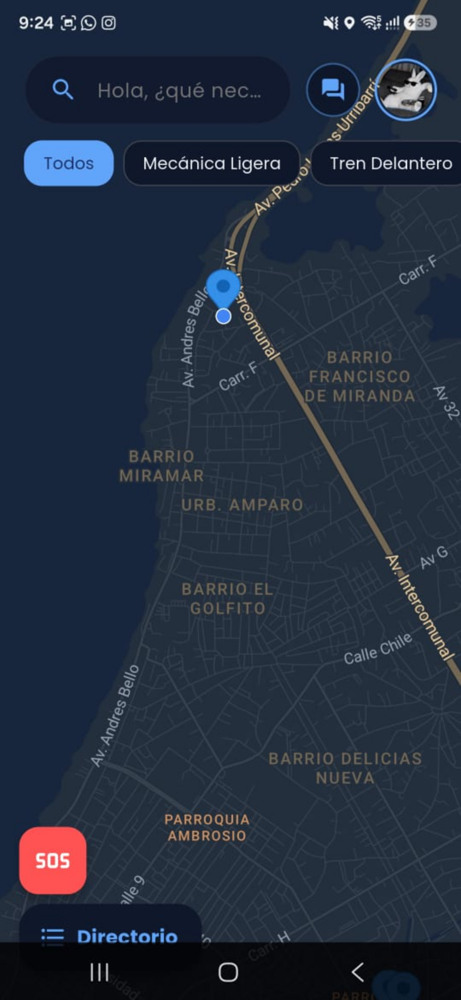
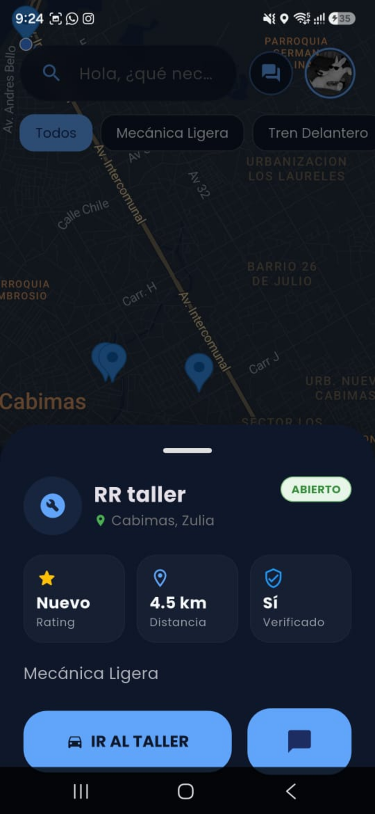
Especialidades:
Tren Delantero, Vulcanizadora
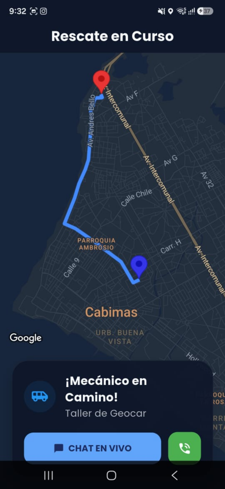
Mecánico: José Pérez (Taller Autocentro)
Auto: Toyota Corolla 2012
Califica el Servicio
¿Cómo calificarías tu experiencia con Taller Autocentro?
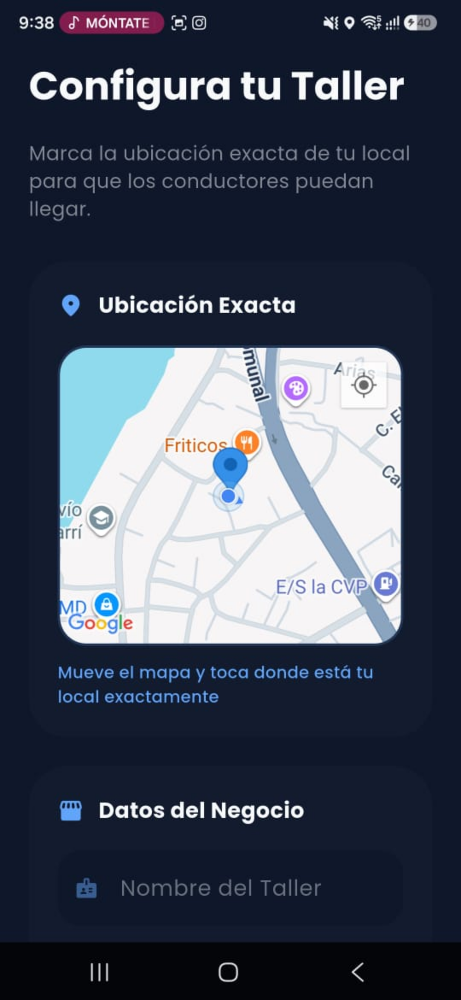
Datos de tu Negocio:
Especialidades:
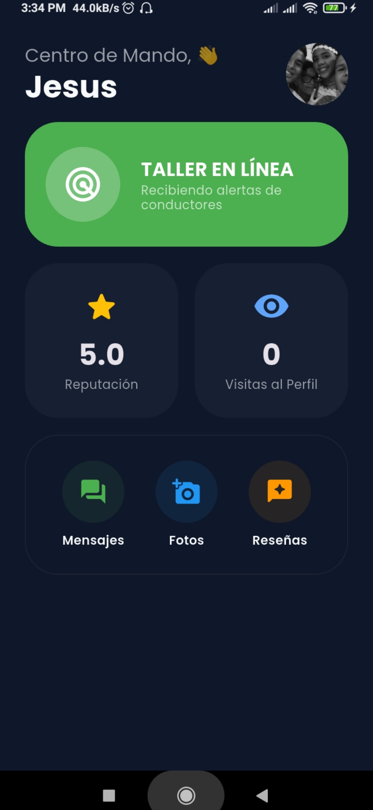
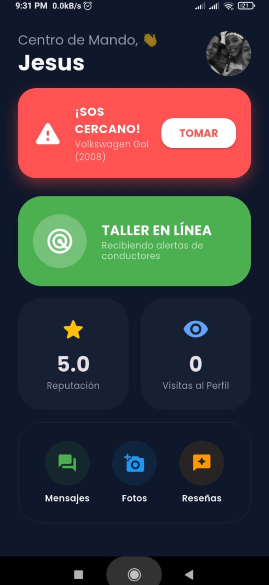
Vehículo accidentado: Ford Fiesta 2008
Ubicación: Av. Intercomunal (2.1 km)
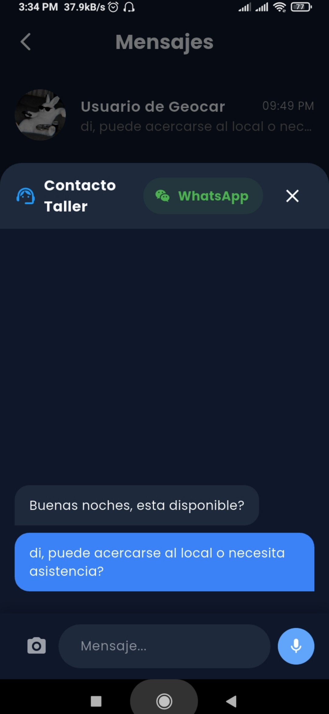